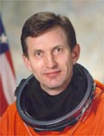

Lyndon B. Johnson Space Center
Houston, Texas 77058
|
National Aeronautics and Space Administration Lyndon B. Johnson Space Center Houston, Texas 77058 |
 |
Biographical Data |
||
SERGEI YEVGENYEVICH TRESCHEV
COSMONAUT OF THE RSC ENERGIA
PERSONAL DATA: Born 18 August, 1958 in Volynsky District, Lipetsk Region (Russia). Married to Elvira Victorovna Trescheva. They have two sons, Dmitry and Alexy. His father is Yevgeny Georgievich Treschev, and his mother is Nina Davydovna Trescheva. His hobbies include soccer, volleyball, ice hockey, hiking, tennis, music, photography, and video.
EDUCATION: 1982 Graduated of the Moscow Energy Institute.
EXPERIENCE: From 1982 to 1984, Treschev served as a group leader in an Air Force regiment. He worked as a foreman and as an engineer at the RSC ENERGIA from 1984 to 1986. His responsibilities included the analysis and planning of cosmonaut activities aboard the Orbital Station and their inflight technical training. He also developed technical documentation and, together with the Yuri Gagarin Cosmonaut Training Center, coordinated all facets of cosmonaut training. His duties also included crew support and training for descent and emergency escape scenarios aboard the MIR Orbital Station. He also participated as a test operator during tests of the ground-based complex (transport vehicle/MIR core module/KVANT-2 module docked configuration) to optimize the Life Support System of ЭУ367/734.
In 1992, he enrolled in the RSC ENERGIA cosmonaut detachment, and from 1992 to 1994 he completed the basic Cosmonaut training course. Treschev spent the next 3 years (1994 to 1996) in advanced Test Cosmonaut training.
From June 1997 to February 1998, Treschev trained as a flight engineer for the Mir station backup Exp-25 crew.
From June 1999 to July 2000 he trained as a flight engineer for the Soyuz-TM backup ISS contingency crew.
Initially, he trained as backup to the ISS Expedition-3 crew.
The Expedition-Five crew launched on June 5, 2002 aboard STS-111 and docked with the International Space Station on June 7, 2002. Treschev performed one EVA during his 6-month stay aboard the Space Station. He and Korzun installed a frame on the outside of the Zarya Module to house components for future spacewalk assembly tasks. They installed new material samples on a pair of Japanese Space Agency materials exposure experiments housed on the outside of Zvezda. They installed devices on Zvezda that will simplify the routing of tethers during future assembly spacewalks. They also improved future station amateur radio operations by adding two ham radio antennas on Zvezda. The Expedition-Five crew (one American Astronaut and two Russian Cosmonauts) returned to Earth on December 7, 2002 aboard STS-113. Completing his first space flight, Treschev logged 184 days, 22 hours and 14 minutes in space, including an EVA totaling 5 hours and 21 minutes.
DECEMBER 2002